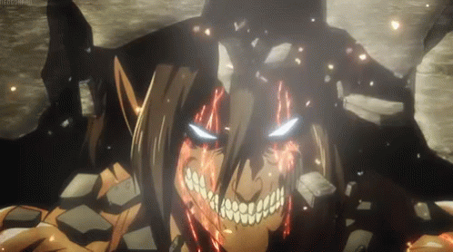

Gigante

Habilidades e Transformações:
- Força Bruta: Aumenta significativamente a força de ataque, permitindo quebrar obstáculos pesados e causar dano massivo em batalhas. (Requer: 10 de Força)
- Poder de Colosso: Aumenta a resistência física, permitindo ao gigante aguentar mais ataques sem sofrer grandes danos. (Requer: 8 de Força, 5 de Velocidade)
- Pata de Ferro: As pernas do gigante ganham resistência extra, permitindo saltos enormes e a habilidade de esmagar o solo ao pisar, criando tremores. (Requer: 7 de Força, 6 de Velocidade)
- Colisão de Impacto: O gigante pode realizar um ataque devastador ao se lançar contra o inimigo, causando grande dano de área. (Requer: 10 de Força, 6 de Velocidade)
- Forma Humana: O gigante pode transformar seu corpo em uma forma humana por um tempo limitado, permitindo interagir com o mundo de uma maneira mais discreta, mas perdendo parte de sua força bruta. (Requer: 5 de Inteligência, 5 de Ego)
- Olhar Imponente: O gigante pode usar sua presença para intimidar inimigos próximos, reduzindo sua moral e eficácia em combate. (Requer: 8 de Força, 6 de Ego)
- Fúria de Goliath: Aumenta a força e a velocidade por um curto período, mas consome grandes quantidades de energia. (Requer: 10 de Força, 4 de Ego)
- Resistência de Titã: Reduz a quantidade de dano recebido de ataques físicos em grande escala, tornando o gigante praticamente imbatível em combates diretos. (Requer: 9 de Força, 6 de Velocidade)
- Golpe de Terra: Ao bater no chão com força, o gigante cria uma onda de choque que derruba inimigos ao redor. (Requer: 8 de Força, 7 de Velocidade)
- Manto de Pedra: A pele do gigante se torna temporariamente tão dura quanto pedra, oferecendo proteção extra contra danos mágicos e físicos. (Requer: 10 de Força, 7 de Velocidade)